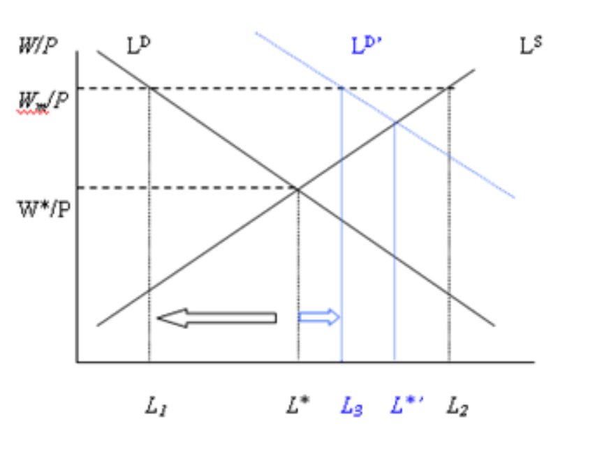
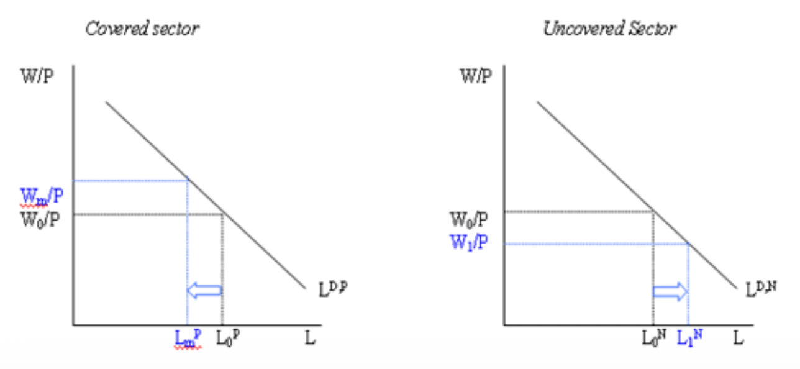
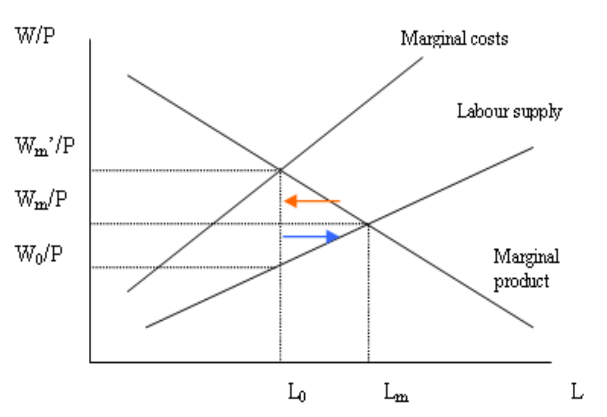

10. Minimum Wage Policy
🧠 I. Motivation, Objectives & Functions
The Minimum Wage (MW) is one of the most common and most controversial policy tools in labour economics. It has deep historical roots — New Zealand introduced its minimum wage in 1894, Czechoslovakia as early as 1919 — and remains at the centre of political debate worldwide. The ILO formalized the concept internationally with the Minimum Wage-Fixing Machinery Convention (C26, 1928), and the European Social Charter of the Council of Europe (1961) further embedded it in international law.
Despite its ubiquity, the MW is far from simple. It is deeply connected to the social and tax system, to the institutional framework of each country, and to wage-setting institutions like collective bargaining. It is easy to administrate and carries no stigma for the recipient (unlike means-tested benefits), which makes it politically attractive.
Core Objectives
- Improve living standards of low-paid workers.
- Motivation device: "Make work pay" — ensure that employment offers a meaningful income advantage over inactivity.
- Protect workers in the least organized sectors and prevent exploitation.
- Reduce wage inequality and combat poverty by compressing the bottom of the overall wage distribution.
🚨 The Fundamental Paradox
The goals of the MW reach far beyond the working population, but the MW may affect only those who work. Most people living in poverty do not work, or do not work full-time. So the MW is an imperfect instrument for fighting poverty at the household level — a point we will return to when discussing poverty effects.
Functions of the Minimum Wage
Three Key Functions
1. Reference Wage:
- It serves as a basis for individual and collective negotiations. Even when workers earn above the MW, its level anchors expectations and bargaining positions.
- In transformation economies (like post-communist Czechia), it played a specific structural role: setting a wage base from which higher wage levels could be determined, pushing businesses to restructure, and helping to develop collective bargaining from scratch.
- It helps maintain competitiveness by preventing social dumping — the practice of undercutting wages to gain an unfair competitive advantage.
2. Instrument of Income Policy:
- Historically (e.g., in Czechia, frequently until 1998), the MW was used as the reference to compute a wide range of social benefits and contributions: pensions, maternity allowance, unemployment benefits, disability benefits, etc.
- Even today (2026), the MW in Czechia determines: health and social insurance contributions, eligibility for the child tax bonus, the maximum earnings allowed while receiving unemployment benefits, hardship allowances for work in difficult conditions, and the tax-exempt ceiling for pensions.
3. Motivation for Human Capital Accumulation:
- By setting a wage floor, the MW creates an incentive for workers to invest in education and training, since the return to skill acquisition becomes more visible. It also pushes firms toward productivity growth — if you must pay workers more, you must find ways to make them produce more.
MW Around the World: Institutional Variety
Forms & Mechanisms
How it is set:
- Governmental decree — the government unilaterally determines the level.
- Outcome of negotiations between representatives of workers and employers (tripartism).
Different types:
- National level: a single government-legislated MW applying to the whole country.
- Industry / sector level: different minima for different sectors (common in countries with strong collective bargaining).
- Regional level: different minima by region (reflecting cost-of-living differences).
Measurement basis: Minima can be set on an hourly, daily, weekly, or monthly basis. Some systems include indexation (automatic adjustment to inflation or wage growth) and legally mandate periodic updates.
Sub-minimum wages: Some systems allow reduced or sub-minimum wages for specific groups — young workers (age-related discounts), trainees, or workers with low qualifications. This acknowledges that a uniform floor may be excessively binding for workers whose productivity is particularly low.
🚨 The "Bite" of the Minimum Wage (Exam Essential)
The economic meaning of a minimum wage cannot be understood from its euro value alone. We must evaluate it through three lenses simultaneously:
- Nominal Level: The simple cross-country monetary value, which mainly reflects overall economic development, productivity, and price levels. By itself, it tells us nothing about whether the MW is generous, adequate, or restrictive.
- Purchasing Power (PPP): What the wage can actually buy. Once we adjust for cost of living, countries that seem far behind in nominal terms may appear much closer in real consumption terms. This matters because the social purpose of a MW is to influence living standards, not just to set a monetary amount.
- The Relative Position — "The Bite": This is the single most informative dimension in labour economics. It measures the MW relative to typical earnings (usually the median wage). A MW close to the median has a "high bite" — it is strongly binding, affects a large share of the labour market, and forces firms to adjust through prices, profits, hours, job composition, or possibly employment. A MW far below the median has a "low bite" — it is mostly non-binding, affecting very few workers directly.
Two countries can have identical nominal MWs but completely different labour-market effects if their wage distributions differ. A country with a low nominal MW can still have a high-bite policy if the rest of the wage distribution is also low. The real policy question is never "How high is the MW?" but "How binding is it in this labour market?"
🇪🇺 II. Minimum Wage Framework in the EU
In the EU, 21 out of 27 countries have a statutory minimum wage. The remaining 6 (notably the Nordics and Austria) rely on collective bargaining to set wage floors. The right to an adequate minimum wage is embedded in the European Pillar of Social Rights. The EU's focus has evolved over time: initially about "fair remuneration," it has shifted recently toward combating social exclusion and poverty.
In 2024, the EU adopted a Directive on adequate minimum wages, to be incorporated into the national law of each Member State. Critically, the Directive does NOT oblige Member States to introduce a statutory minimum wage, nor does it set a common MW level across the EU. Instead, it creates a framework.
Three Major Goals of the EU Directive
- Setting and Updating: Establish a framework for adequate minimum wages that allow a decent standard of living. It uses internationally recognized benchmarks: 50% of the national gross average wage and 60% of the national gross median wage. Social partners must be involved in setting and continuously updating the MW.
- Monitoring and Enforcement: Governments should enhance the effective access of workers to minimum wage protection — ensuring compliance, not just setting a number on paper.
- Promoting Collective Bargaining: Encourage an increase in the share of employees covered by a collective agreement. Member States where collective bargaining coverage is below 80% are required to establish an action plan to actively promote it.
Article 5: Procedure for Setting Adequate MW — The Key Criteria
Member States with statutory MWs must define national criteria to guide the setting and updating of their MW. These criteria must include at least the following four elements:
- (a) Purchasing power of statutory minimum wages, taking into account the cost of living.
- (b) The general level of wages and their distribution.
- (c) The growth rate of wages.
- (d) Long-term national productivity levels and developments.
Additional rules:
- States may use automatic indexation mechanisms, provided they never lead to a decrease in the MW.
- Updates must take place at least every 2 years (or every 4 years if an automatic indexation mechanism is in place).
- Each Member State must designate or establish consultative bodies to advise competent authorities on MW-related issues.
📊 III. MW Effects: The Full Picture
Before diving into the theoretical models, it is essential to understand that the MW can affect the economy through many channels simultaneously, not just employment:
Channels of MW Impact
- Employment: The most debated channel. Can be positive, negative, or zero depending on the model.
- Wages: Direct upward push on low wages, with potential ripple effects up the distribution.
- Non-wage benefits: Firms may cut benefits (health insurance, bonuses, meals) to offset higher wage costs.
- Working time: Firms may reduce hours instead of cutting jobs entirely.
- Productivity: Higher wages can force firms to become more efficient, rationalize production, and invest in worker training.
- Prices: Firms may pass higher costs to consumers via higher output prices — depends on the elasticity of demand and supply.
- Profits: If firms cannot fully pass through costs, profit margins shrink.
- Turnover: Higher wages reduce voluntary quits, lowering hiring and training costs.
There is mostly no consensus on the net effect — it depends critically on model assumptions, the level of the MW, and the specific economic context.
📐 IV. Theoretical Background: Does It Kill Jobs?
A. The Perfect Competition Model
The textbook starting point rests on many simplifying assumptions: homogeneous labour force, identical skill levels, no adjustment of the output price, and firms can hire an unlimited amount of workers at the market wage. Under these conditions, the prediction is clear: a binding minimum wage reduces employment.
In a dynamic framework, the prediction worsens: labour market rigidities and frictions tend to magnify the negative effects, because adjustment takes time and firms face costs when restructuring.
However, from the perspective of traditional Keynesian economics, the story reverses: higher wages result in stronger aggregate demand (workers spend a higher fraction of their income than capital owners), which boosts economic activity and can increase labour demand — partially or fully offsetting the negative micro-level effects.

📉 Graph Analysis: Perfect Competition & Demand Shifts
🔍 Initial Equilibrium:
- Labour demand ($L_D$) and supply ($L_S$) intersect at equilibrium employment $L^*$ and wage $W^*/P$.
- This is the competitive equilibrium: all workers willing to work at that wage are employed. Firms hire up to the point where wage = marginal productivity.
⚠️ Introducing the Minimum Wage ($W_m/P$):
- The minimum wage is set above equilibrium.
- At this higher cost, firms reduce demand to $L_1$. Workers supply more labour ($L_2$).
- Result: Excess labour supply $\rightarrow$ Unemployment. The wage exceeds the marginal productivity of some workers, so firms stop hiring them.
🔄 The Macro Effect — Demand Shift ($L_D \rightarrow L_D'$):
- The blue curve shows a rightward shift in labour demand — driven by economic growth, productivity gains, or Keynesian demand boosts (higher wages → more consumption → higher demand for goods → higher labour demand).
- With higher demand, employment increases from $L_1$ to $L_3$, partially offsetting the negative effect of the MW.
- But employment remains below the new competitive level $L^{*'}$. So the MW still creates some unemployment, but the magnitude depends intensely on economic conditions.
🧠 Deep Intuition:
- In a boom: negative effects are weaker (demand absorbs the shock).
- In a recession: they are amplified (firms already struggling + higher wage floor = more layoffs).
- The employment effect is not mechanical — it depends on the whole economy.
B. The Two-Sector Model (Covered vs. Uncovered)
This model relaxes the unrealistic assumption of a single, uniform labour market. Instead, we distinguish a Covered Sector (where the MW applies and is enforced) from an Uncovered Sector (informal economy, grey economy, or sectors exempt from the MW). Workers can move between sectors. This partly mitigates the negative effects of the MW: instead of unemployment, we get reallocation.

📉 Graph Analysis: The Spillover Effect
🔵 Covered Sector (Left):
- Minimum wage is imposed above equilibrium $\rightarrow$ wages rise from $W_0^P$ to $W_m^P$.
- Firms reduce labour demand $\rightarrow$ employment falls from $L_0^P$ to $L_m^P$. Workers lose jobs.
- But unlike the basic model, they don't disappear — they migrate to the uncovered sector.
🔵 Uncovered Sector (Right):
- The displaced workers flow in, increasing labour supply in this sector.
- Supply shifts right $\rightarrow$ wages fall from $W_0^N$ to $W_1^N$. Employment increases from $L_0^N$ to $L_1^N$.
- Result: no open unemployment necessarily, but lower wages in the uncovered sector.
🔥 Deep Intuition (EXAM ESSENTIAL):
- The MW here does not necessarily create open unemployment. Instead, it redistributes workers across sectors and creates wage compression and inefficiency.
- Workers are pushed into lower-productivity informal jobs, wages fall in the uncovered sector, and the overall allocation of labour becomes less efficient.
- This also explains why measured employment effects can appear small or zero: workers aren't "unemployed" — they're just in worse jobs.
Heterogeneous Labour & the Hicks-Marshall Laws
Why Elasticity Determines Everything
Not all workers are equally affected by a MW hike. The least productive workers are hit most heavily — those whose marginal productivity is closest to or below the new MW level. This is why some systems allow sub-minimum wages for young or low-qualified workers.
The magnitude of the employment effect depends critically on the elasticity of demand for labour. The Hicks-Marshall Laws of Derived Demand identify four conditions under which labour demand is highly elastic (and therefore MW effects are large):
- High price elasticity of demand for the firm's products — if consumers are price-sensitive, firms cannot pass through wage increases via higher prices.
- Easy substitution of labour for other factors of production (capital, technology) — firms switch to machines.
- High share of labour costs in total costs — a wage increase has a proportionally larger impact on the firm's cost structure.
- High elasticity of supply of other factors — if capital and materials are readily available, substitution away from labour is cheap.
When all four conditions hold, labour demand is very elastic, and a MW hike causes large employment losses.
The Substitution Model (Skilled vs. Unskilled)
This model introduces two types of workers: skilled and unskilled. The MW is set above the market-clearing wage of unskilled workers but below the wage of skilled workers. What happens?
- Firms substitute unskilled workers with skilled workers (who are now relatively cheaper in efficiency terms).
- The ratio of skilled to unskilled workers rises.
- Demand for skilled workers increases → their market wage rises, which dampens some of the increase in skilled employment.
Critical result: The employment effect cannot be positive in this model, because the wages of at least one — and possibly both — types of workers increase. The MW always creates some distortion, even if it is redistributive.
C. Alternative Theoretical Perspectives
Human Capital Theory
A MW can increase productivity by forcing firms to invest in training their workers. This goes against the classical Becker model, where firms under-invest in general training because trained workers can leave. The MW acts as a "second best" solution — it corrects a pre-existing market failure (under-investment in human capital).
Efficiency Wages Theory
Higher wages and unemployment act as a motivation device not to shirk. Workers paid above their outside option work harder because the cost of being fired is high. Additional channels: lower turnover (saving hiring/training costs), nutrition effect (better-fed workers are more productive), and less monitoring needed. In a competitive environment, these effects can generate a positive employment response.
Job Search & General Equilibrium Effects
- Job search effort: Higher wages increase the incentive to search for work and improve the quality of matching between workers and jobs. This makes the labour market more efficient.
- General equilibrium shift: The MW may shift the entire job composition of the economy toward more productive and better-paid jobs. Low-productivity firms that relied on cheap labour are forced to exit, while more efficient firms expand. In the long run, this could raise aggregate productivity.
D. The Monopsonistic Market

📉 Graph Analysis: When Minimum Wage Creates Jobs
🔍 Initial Monopsony Setting:
- Firms are wage-setters, not wage-takers (e.g., a dominant hospital hiring nurses, a major company in a small town).
- Because hiring an extra worker requires raising wages for all existing workers, the Marginal Cost (MC) of labour lies above the supply curve.
- The firm hires where MC = Marginal Product, leading to employment $L_0$ at wage $W_0/P$.
- Result: Underemployment and underpayment. The wage is below productivity, and employment is inefficiently low.
⚠️ Introducing Minimum Wage ($W_m/P$):
- If the MW is set above the monopsony wage but below the competitive equilibrium, it caps the marginal cost of labour. The MC curve becomes flat (horizontal) up to the MW level.
- The firm can now hire more workers without raising wages retroactively for existing employees.
🔥 The Stunning Result:
- Employment increases from $L_0$ to $L_m$, and wages increase from $W_0/P$ to $W_m/P$.
- Maximum employment is achieved when the MW is set exactly at the competitive equilibrium level.
- The MW acts like a constraint that forces the distorted monopsony market closer to the competitive outcome.
⚠️ Monopsony: The Critique
Your course is very clear that monopsony is a special case with important limitations:
- Pure monopsony is unlikely for low-skilled labour, which typically features many small competing firms (retail, fast food, cleaning).
- But: Firms colluding in wage setting — which may be facilitated by collective bargaining institutions — can mimic monopsony outcomes.
- Some degree of monopsony power also exists when there are search frictions and mobility costs — workers cannot costlessly switch employers.
- Few pure monopsonies exist, but many firms have some degree of monopsony power. Examples: specific skills markets, hospital markets for nurses/lab technicians/radiologists, fast-food chains in nearby towns, a large company dominating a small town.
E. The Open Economy Channel
Substitution by Importing
This channel relaxes the assumption that foreign trade does not exist. The logic is straightforward:
Higher MW $\rightarrow$ higher costs $\rightarrow$ more expensive products $\rightarrow$ lower competitiveness $\rightarrow$ substitution of domestic production for imports $\rightarrow$ lower employment
The negative effect of MW is stronger for small open economies (like Czechia), because they are more exposed to international competition and cannot shield domestic producers from cheaper foreign goods.
F. Theoretical Consensus on Employment Effects
The Threshold Logic
Both positive and negative employment effects are theoretically possible. But there is a threshold above which negative effects prevail — and the least productive workers are always affected most heavily:
- If the MW is too low → it is not binding. No employment effects, because almost no one earns that little.
- If the MW is too high → employment decreases. Firms cannot afford to keep workers whose productivity falls below the MW.
The magnitude of the effects depends on:
- The economic relevance of the MW — its relative level compared to the overall wage floor in the economy (the "bite").
- The size of the increase — a small hike has different effects than a dramatic jump.
- The economic context — market structure, institutional characteristics, business cycle position.
The employment effect of the MW is ultimately an empirical question.
G. Wage Effects & Poverty Effects
Wage Effects
A MW hike does not just raise the bottom wage — it shifts the entire wage distribution through ripple effects (workers slightly above the new minimum also demand raises to maintain differentials). It decreases overall wage differentiation. However, the effect on total income distribution is much weaker, if any — because income depends on household composition, hours worked, and non-wage income. Wage effects may also magnify employment effects (if higher wages for some cause job losses for others) and increase inflation (pass-through to consumer prices).
Poverty Effects
Here the picture is much clearer: the MW is NOT an effective instrument for poverty reduction. The reason is twofold: (1) most people living in poverty do not work, or do not work full-time — so they never receive the MW; and (2) the majority of low-wage workers are not poor at the household level (they may be secondary earners in non-poor households). Poverty is a household-level indicator; the MW is an individual-level instrument. The mismatch is fundamental.
🔬 V. Empirical Results & Real-World Evidence
Empirical results on MW effects are mixed, and the dominant findings have evolved significantly over the past four decades. The evidence is mainly U.S.-driven but increasingly global.
A. The Evolution of Empirical Methods
Three Waves of Research
- Time series (up to 1980s): Macro-level studies. The consensus (Brown et al.) was that the MW may reduce hiring of low-skilled, inexperienced workers → higher unemployment among these groups. But these studies suffered from serious endogeneity problems: MW increases tend to happen when the economy is doing well, confounding the causal effect.
- 1990s: Individual-level data, panel data, cross-sectional comparative studies — both in the US and Europe. Results became inconsistent (OECD). The old consensus began to crack.
- Natural experiments (from 1992 on): The methodological revolution. Solutions to endogeneity: (1) natural experiments using Difference-in-Differences (DiD), (2) Instrumental Variables (IV) — finding variation in MW that is unrelated to economic conditions.
B. The Card & Krueger Revolution (1994)
In April 1992, New Jersey raised its minimum wage from $4.25 to $5.05. Neighbouring Pennsylvania did not change. Card & Krueger conducted a two-wave survey of 410 fast-food restaurants on both sides of the border — before the increase and about 8 months after. The main outcomes measured were: FTE employment, starting wages, and meal prices. The core design was a Difference-in-Differences (DiD) comparison: NJ (treatment) vs. PA (control).
- Starting wages in NJ rose by about 10%.
- Relative to PA, employment in NJ fast-food restaurants increased by 2.76 FTE workers per store (about 13%).
- Meal prices in NJ rose faster than in PA (about 4% pre-tax), consistent with partial pass-through to consumers.
- No evidence that the wage increase reduced employment in this setting. Results were robust across alternative specifications.
It challenged the textbook competitive model as a universal empirical benchmark for low-wage labour markets. It did not prove that MW always raises employment — but it undermined the old claim that negative employment effects are mechanically large and universal.
C. The Debate That Followed
1994
Card & Krueger: Survey-based DiD in fast food. No employment loss; relative employment rises.
2000
Neumark & Wascher: Using payroll records, argued the NJ increase reduced employment.
2000 reply
Card & Krueger: Reanalyzed payroll data and defended original conclusion as robust to data choices.
Post-2000
Shift toward border designs, synthetic control, and modern DiD/event-study methods.
Modern Consensus (High-Income Countries)
- Bottom wages rise clearly; some ripple effects extend slightly above the new minimum.
- For typical, moderate MW increases, average employment effects are small, close to zero, or context-dependent.
- Risk of negative effects is higher when the MW is very binding (high bite).
- Firms adjust through many margins: prices, turnover, profits, productivity, hours, and job composition — not mainly through large job cuts.
- Effects on wage inequality are clearer than effects on poverty or household income.
D. CEE & Visegrád Evidence
The "Bite" in Practice: CEE Case Studies
The evidence base for Central and Eastern Europe is thinner than for the US/UK/Germany, and results differ more across countries and periods. But a clear pattern emerges around the role of the bite:
- Hungary (2001-02) — High Bite: A large and persistent MW hike. Employment losses were small on average, but stronger in tradable sectors. Roughly 75% of costs were passed to consumers and about 25% to firm owners. Lesson: strongly binding hikes don't have to produce huge aggregate job losses, but adjustment shows up in prices and exposed sectors.
- Slovenia (2010) — Very High Bite: A very sharp MW increase led to sizeable job-retention losses for MW workers, especially youth and low-education groups. The best CEE example that very large hikes can create visible disemployment risks.
- Czechia + Slovakia (2005-17) — Low to Moderate Bite: With MW below roughly 40% of the average wage, studies do not find robust average employment losses. Low-bite settings mainly raise wages; the threshold matters more than the formal policy change itself.
- Estonia / Poland — Lower Bite: Evidence is mixed — often no clear average effect, but risks can rise for youth, poorer regions, or weak firms. Context still matters even when bite is lower.
Teaching Shortcut: Don't ask only "Did the MW increase?" Ask "How binding was it, and which firms/workers were exposed?"
Meta-Analyses & Czech Evidence
- Broecke et al. (2015): Meta-analysis on emerging countries — found only a minimal (or no) effect of MW increases on employment.
- Neumark & Corella (2019): Concluded that MW employment effects in emerging countries were more consistently negative when the MW was higher and binding within the formal sector, and for vulnerable workers.
In Czechia specifically:
- Several studies show no significant employment effects (Buchtíková 1995; Grossmann et al. 2019 for 2012–17).
- Some point to negative effects (Fialová & Mysíková 2009 for 1995–2005) or mixed effects (Eriksson & Pytlikova 2004 for 1998–2002; Fialová & Mysíková 2020 for 2003–16).
🇨🇿 VI. MW in the Czech Republic: Why Are Effects Muted?
In Czechia, the impact of the minimum wage depends not only on its level, but largely also on other institutions, informality, and contract form. Three main channels weaken measured employment effects:
1. Setting & Legislation
Until 2024, the Czech government had no legal duty to update the MW annually or to reach agreement with social partners; adjustments were often politically driven. Since 2025, Czechia has introduced regular indexation and a path toward a MW close to 50% of the average wage. The older system also included guaranteed wage tariffs by job complexity; from 2025 these are abolished in the private sector, while four salary tariff levels remain in the public sector.
2. Informality
In CEE countries, informality often means underreported wages or hours rather than completely informal off-the-books jobs ("envelope wages"). A higher MW can therefore simply shift pay between formal and informal components, muting measured employment effects — the total cost to the employer doesn't actually change much. Relatively high taxation of low wages in Czechia may also weaken the transmission from MW policy to net labour costs and hiring.
3. Non-Standard Work (Švarcsystém)
Self-employment is widely used as a substitute for standard employment contracts in Czechia — it accounted for about 16% of total employment in 2019. Because self-employment falls entirely outside minimum wage regulation, it acts as a pressure release valve: if the MW rises too much, firms shift workers from standard contracts to pseudo-self-employment arrangements. This dampens both wage and employment effects in the official statistics. MW hikes may also strengthen incentives to use self-employment or temporary contracts instead of standard employment.
💡 Exam Summary: The Minimum Wage Debate
Empirical research today rejects a single universal effect. The impact of the MW depends on three things: (1) the bite — how binding is it relative to the national wage distribution; (2) market structure — competitive vs. monopsonistic vs. open economy; and (3) firms' adjustment margins — can they adjust through prices, productivity, hours, and informality rather than headcount? The employment effect is not the only effect, and often not even the most important one.